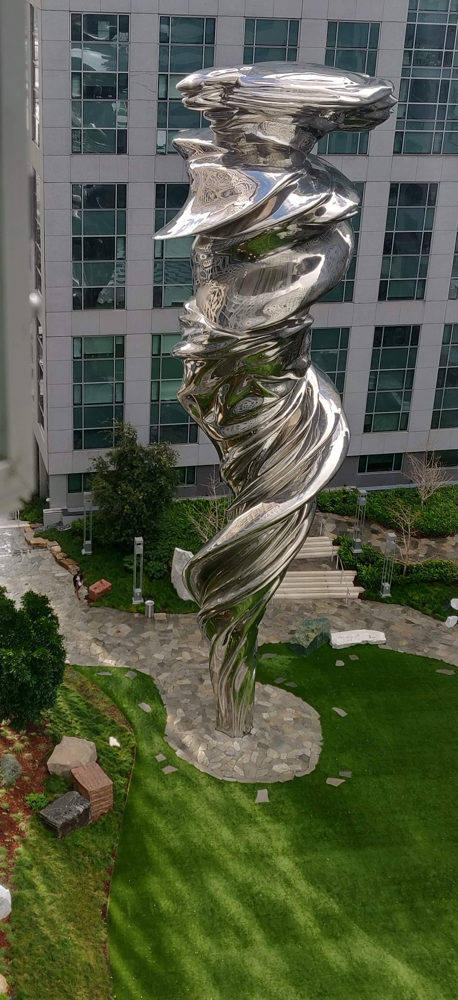

Venus is artist Lawrence Argent’s interpretation of the classic Venus de Milo sculpture and reigns as the centerpiece of Piazza Angelo, the courtyard at Trinity Place. At 92 feet, she is the tallest sculpture in San Francisco.
There are 18 art elements at Piazza Angelo, of which include a 20-seat Carrara marble table and custom-designed seven-foot glass bollards with illuminated hollow centers. To give the table “movement” and create the sense of gathering at a friend’s home, Argent added a “ripple” along the marble table top, creating the impression of a large tablecloth naturally creased in the center.
The collection in its entirety is entitled C’era Una Volta—“Once Upon A Time”.
“The gift that Angelo (Trinity’s late founder) has given the city is the experience of art. It is not a decoration. It’s a place, a space that people can come and enjoy a respite from the bedlam of the city. That is what is magical,” shares Argent.
Argent also designed a mosaic path that is nearly 50 yards long and artfully rendered to reveal a new view with every step. It will extend into the sidewalk on Market Street upon completion, inviting pedestrians into the piazza.